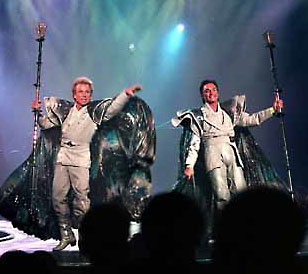
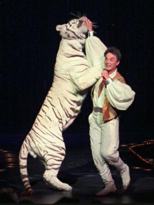

|
Siegfried and RoyOversize stage illusions, larger-than-life sets, flouncy colorful costumes, in-your-face music and endangered white tigers. For thirty years, magicians Siegfried and Roy have been two crazy idiots by anyone's standards, synonymous with outrageous Las Vegas ticket prices (over $100.00 for a single ticket to their show at the Mirage), and a model of eccentric behavior rivaled only by that of Michael Jackson. For two seemingly gay men, these Meisters of illusions sure have a lot of pussy around the house. Not unlike crazy cat ladies whose homes are condemned and destroyed, this magical beast-loving duo shares a litter of endangered white lions and tigers. They have names like Pride, Joy, Passion, Destiny and Vision - and all of them have all slept in Roy's bed. "Women and tigers are exactly alike," snurked Roy during an Esquire interview. "They have the same temperament, emotions, and vulnerabilities. They must be spoken to softly, but it doesn't hurt to carry a big stick just in case. You can teach a tiger to use the toilet." After thirty years of frolicking like overgrown toddlers with their enormous pets, one of the cats finally struck back. On October 3, 2003 - Roy's 59th birthday - in front of a packed audience, a nine-year-old white lion named Montecore lunged at Roy's throat. This was the cat's first time on stage. Momentarily stunned, Roy attempted to beat the tiger off with a microphone. Editor's Note: Roy did not masturbate the tiger, but rather he tried to knock the tiger unconscious. But it was no use. Support staff in the wings freaked out as the tiger clamped his teeth around Roy's throat and dragged him offstage. Audience members - including a group of Australians - gasped, no longer sure what was real and what was part of the show. One shocked observer gasped, "He looked like a rag doll." There was blood everywhere. Hakuna Matata! Roy's partner, Siegfried Fisbacher, appeared on stage moments later, visibly upset, and cancelled the remainder of the program. Roy was rushed to University Medical Center to undergo emergency surgery. Montecore is presently in quarantine. Brilliant thoughts from Siegfried: "Sleeping with lions and tigers means you don't need many pillows." "All good things come with responsibility and also with fear of responsibility. That fear puts you in handcuffs. Those are the most important handcuffs I ever escaped from." "I feel guilty sometimes about what I have. I have a big new house, but it embarrasses me. I told Shirley MacLaine it was a little big for me. She said, "But you wanted it!" Then I realized, Yes, I wanted it, and that's why I got it." Memorable quotes from Roy: "Every night when I'm onstage, all the things I'm doing are for real. They are not illusions but facts, and that is how I execute them. Whether I fly through the air or battle a fire-breathing dragon or sit on a white tiger--that is my reality. If we are living our imagination, we are the greatest." "Imitation is the sincerest form of pain." Timeline
|